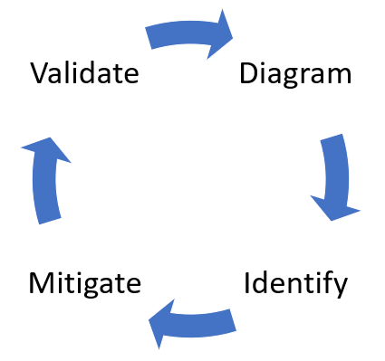
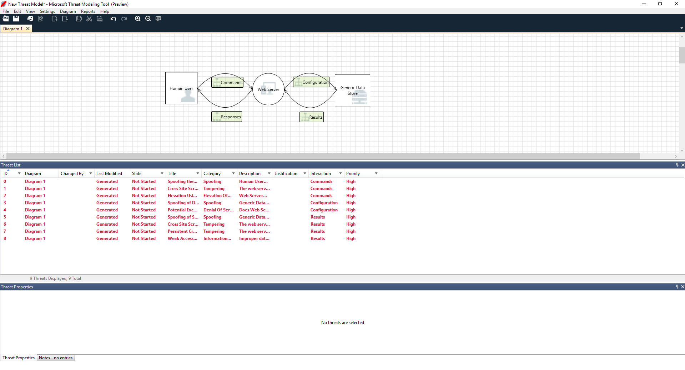

Trasformare la panoramica tecnica in capacità di valutazione.
Slide 81. Dalle esigenze ai criteri di scelta
Durata prevista: 10 minuti.
Driver di business
Vincoli tecnici e normativi
Attributi di qualità
Competenze e modello operativo
Evidenze e assunzioni
Schema grafico: dalla domanda alla shortlist
Quattro riquadri sovrapposti che formano un imbuto: sono sempre più stretti scendendo, con una freccia verso il basso tra l’uno e l’altro.
Esigenze.
Vincoli.
Criteri.
Opzioni.
Didascalia sotto lo schema: una decisione, con assunzioni esplicite.
Slide 82. Attributi di qualità
Durata prevista: 10 minuti.
Affidabilità
Prestazioni e scalabilità
Sicurezza
Manutenibilità
Interoperabilità
Usabilità e accessibilità
Schema grafico: la qualità è multidimensionale
Al centro un riquadro “Fit for purpose” (adeguato allo scopo), circondato da sei riquadri, uno per ciascun attributo di qualità: affidabilità, prestazioni, sicurezza, manutenibilità, interoperabilità e usabilità.
Slide 83. Matrice di valutazione delle alternative
Durata prevista: 10 minuti.
Criteri espliciti e pesati
Scala di valutazione condivisa
Evidenze a supporto
Sensibilità rispetto ai pesi
Decisione documentata
Esempio di score pesato
Tabella di valutazione di due alternative, A e B, su quattro criteri, con voto da 1 a 5 e peso percentuale del criterio:
Criterio
Peso
A
B
Sicurezza
30%
5
4
Costo
20%
3
5
Skill
25%
4
3
Time
25%
4
2
Totale riportato nella slide: A 4,15, B 3,35.
Slide 84. Decision record: rendere la scelta leggibile
Durata prevista: 10 minuti.
Contesto
Decisione
Alternative considerate
Conseguenze
Data, stato e responsabili
Esempio di decision record: ADR-007, database del servizio
Scheda con cinque campi:
Campo
Contenuto
Stato
Accettata
Contesto
letture elevate, team SQL
Decisione
PostgreSQL gestito
Alternative
SQL Server, NoSQL
Conseguenze
skill e lock-in moderato
Sotto la scheda: data, owner, evidenze e link.
Slide 85. Codice manutenibile
Durata prevista: 10 minuti.
Leggibilità e semplicità
Responsabilità chiare
Riduzione della duplicazione
Standard condivisi e revisione
Schema grafico: costo di una modifica
Due colonne a confronto, ciascuna con una catena di tre passi dall’alto verso il basso:
Prima: duplicazione → 5 file da toccare → regressioni.
Dopo: responsabilità chiare → 1 modulo da toccare → test rapido.
Didascalia: il tempo di cambiamento diminuisce.
Slide 86. Testabilità
Durata prevista: 10 minuti.
Comportamenti verificabili
Dipendenze controllabili
Test a più livelli
Automazione e feedback rapido
Schema grafico: portafoglio dei test (piramide)
Tre fasce sovrapposte che formano una piramide, la cui larghezza cresce dall’alto verso il basso:
in alto, la più piccola: E2E (end to end), pochi test;
al centro: Integrazione;
in basso, la più larga: Unit, molti test.
Le didascalie indicano che i test più in basso sono più veloci e che la fiducia cresce salendo; il feedback è continuo nella pipeline.
Slide 87. Documentazione che accompagna il sistema
Al centro il riquadro “Sistema”, circondato da quattro tipi di documento, ciascuno con il proprio destinatario:
Documento
Destinatario
API
sviluppatori (Dev)
ADR (decisioni architetturali)
architetti (Arch)
Runbook
operations (Ops)
Guida
utenti
Slide 88. Sicurezza applicativa di base
Durata prevista: 10 minuti.
Identità e controllo degli accessi
Validazione degli input
Protezione dei dati e dei segreti
Dipendenze e supply chain
Logging e gestione degli incidenti
Schema grafico: security by design in ogni fase
Sei riquadri disposti in cerchio attorno al riquadro centrale “Rischio ↓” (il rischio diminuisce). Seguendo il cerchio in senso orario dall’alto, le fasi sono: Threat model, Design, Code, Test, Deploy, Monitor. La sicurezza viene considerata in ogni fase del ciclo di vita.
Slide 89. Linee guida AgID: quattro prospettive sul software sicuro
Durata prevista: 15 minuti.
Linee guida ufficiali per lo sviluppo sicuro delle applicazioni nella Pubblica Amministrazione.
Le quattro prospettive
Prospettiva
Che cosa riguarda
Secure SDLC
azioni di sicurezza in tutte le fasi
Hardening
proteggere il software di base e il contesto
Secure coding
prevenire e individuare le vulnerabilità
Threat modeling
minacce, mitigazioni, Secure/Privacy by Design
Obiettivo
Disponibilità, integrità e riservatezza delle informazioni della PA.
Fonte. Fonti ufficiali AgID: pubblicazione 03/07/2024 · Allegato 4 Secure/Privacy by Design
Slide 90. Secure SDLC nella PA: requisiti, controlli e responsabilità
Durata prevista: 15 minuti.
Schema: le cinque fasi del Secure SDLC
Cinque riquadri in sequenza da sinistra a destra, collegati da frecce:
Design: requisiti e threat model.
Coding: standard e review.
Verify: SAST (analisi statica), DAST (analisi dinamica) e test.
Release: accettazione e hardening.
Operate: monitoraggio e aggiornamento.
Tre responsabilità lungo le fasi
Governance PA
Struttura tecnica che guida e monitora.
Infrastruttura operativa sicura.
Coordinamento funzionale.
Fornitore / team
Standard e best practice dichiarati.
Vulnerabilità corrette.
Revisioni di sicurezza continue.
Evidenze
Controlli e risultati.
Criteri di accettazione.
Owner e tracciabilità.
Fonte. Fonte: AgID, pp. 7–9 · impatti organizzativi, strategia di applicazione e responsabilità
Slide 91. Threat modeling: trovare difetti di design prima del codice
Durata prevista: 15 minuti.

Immagine: Ciclo del threat modeling in quattro fasi: Diagram, Identify, Mitigate, Validate, con frecce che formano un cerchio.
Descrizione. Quattro parole disposte ai vertici di un quadrato e collegate da frecce blu curve che girano in senso orario, a formare un ciclo continuo: "Diagram" (in alto a destra), "Identify" (in basso a destra), "Mitigate" (in basso a sinistra), "Validate" (in alto a sinistra), da cui si torna a "Diagram". È il processo del Microsoft Security Development Lifecycle per la modellazione delle minacce.
Fonte. Fonti: AgID pp. 4–5 · Microsoft Security Development Lifecycle
Slide 92. Microsoft Threat Modeling Tool: dal DFD alle minacce STRIDE
Durata prevista: 15 minuti.
Schermata del tool: DFD (diagramma di flusso dei dati) ed elenco delle minacce generate per elemento.

Immagine: Schermata di Microsoft Threat Modeling Tool: diagramma con utente, web server e archivio dati, e tabella con nove minacce generate.
Descrizione. Screenshot di "New Threat Model* - Microsoft Threat Modeling Tool (Preview)". In alto il menu (File, Edit, View, Settings, Diagram, Reports, Help) e la barra degli strumenti. Nell'area di disegno "Diagram 1" un diagramma di flusso dei dati: a sinistra un'entità esterna quadrata "Human User", al centro un processo circolare "Web Server", a destra un archivio dati "Generic Data Store". Tra Human User e Web Server due frecce curve opposte, etichettate "Commands" (verso il server) e "Responses" (verso l'utente); tra Web Server e Generic Data Store due frecce etichettate "Configuration" e "Results". Sotto, il pannello "Threat List" con nove minacce generate automaticamente, tutte in rosso con stato "Not Started" e priorità "High". Il pannello "Threat Properties" è vuoto: "No threats are selected".
Testo contenuto nell’immagine
Diagramma: Human User ⇄ (Commands, Responses) ⇄ Web Server ⇄ (Configuration, Results) ⇄ Generic Data Store
Threat List — colonne: ID, Diagram, Changed By, Last Modified, State, Title, Category, Description, Justification, Interaction, Priority
0 — Diagram 1 — Generated — Not Started — Spoofing the… — Spoofing — Human User… — Commands — High
1 — Cross Site Scr… — Tampering — The web serv… — Commands — High
2 — Elevation Usi… — Elevation Of… — Web Server… — Commands — High
3 — Spoofing of D… — Spoofing — Generic Data… — Configuration — High
4 — Potential Exc… — Denial Of Ser… — Does Web Se… — Configuration — High
5 — Spoofing of S… — Spoofing — Generic Data… — Results — High
6 — Cross Site Scr… — Tampering — The web serv… — Results — High
7 — Persistent Cr… — Tampering — The web serv… — Results — High